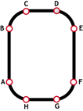
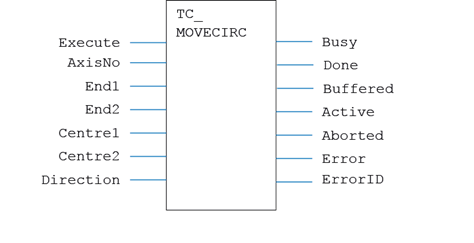
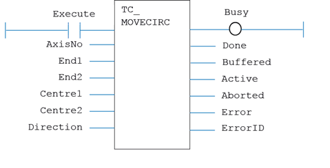

Motion Function
Issues a new MOVECIRC motion request for the axes specified by 'AxisNo'.
|
Execute : BOOL; |
Rising edge requests execution |
|
AxisNo : USINT; |
Axis number |
|
End1 : LREAL; |
Relative end point X |
|
End2 : LREAL; |
Relative end point Y |
|
Centre1 : LREAL; |
Relative centre point X |
|
Centre2 : LREAL; |
Relative centre point Y |
|
Direction : BOOL; |
Direction of rotation |
|
Busy : BOOL; |
TRUE if function is running |
|
Done : BOOL; |
TRUE when function has completed normally |
|
Buffered : BOOL; |
TRUE when motion command is in NTYPE buffer |
|
Active : BOOL; |
TRUE when motion command is in MTYPE buffer |
|
Aborted : BOOL; |
TRUE if function terminates due to CANCEL |
|
Error : BOOL; |
TRUE if a program error is detected |
|
ErrorID : UINT; |
Returned error number |
When the execute input changes from FALSE to TRUE (rising edge), the function block attempts to load the motion command into the required axis buffer. If the buffer is unavailable, the function re-tries on each PLC scan. Once the motion command has been loaded, the appropriate outputs will indicate the state of the motion; in NTYPE, MTYPE, aborted (Cancelled) or done.
A programming error, such as parameter out of range, will set the Error output and return an error ID number. For the Error ID reference, see the Trio Programming error list.
The function must be in the processing scan and the Execute input TRUE for the outputs to correctly show the status of the move.
For output timing diagram, please refer to timing diagram section in TC_MOVE .
MyTC_MoveCirc(Execute, AxisNo, End1, End2, Centre1, Centre2, Direction);
Busy := MyTC_MoveCirc.Busy;
Done := MyTC_MoveCirc.Done;
Buffered := MyTC_MoveCirc.Buffered;
Active := MyTC_MoveCirc.Active;
Aborted := MyTC_MoveCirc.Aborted;
Error := MyTC_MoveCirc.Error;
ErrorID := MyTC_MoveCirc.ErrorID;
The command sequence to plot the letter ‘0’ might be this:

//----------------------------------------------------------
// Sequence of Moves and Movecirc started by IN(6)
// IN(6) triggers an RS latch function block
//----------------------------------------------------------
RS_Latch_Start(IN6, start_latch_reset);
If RS_Latch_Start.Q1 = True Then
move_count := 1;
start_latch_reset := True;
End_If;
If move_count = 1 And Move_2_a.Busy = False Then
// set the MERGE for the whole sequence
TCW_MERGE( AxisNo:=0, MERGE:=merge_flag );
// Set up speed, accel and decel
TCW_SPEED( 0, 50 );
TCW_ACCEL( 0, 5000 );
TCW_DECEL( 0, 5000 );
// run the first move on TC_MOVE2 function block a
x1 := 0; y1 := 60;
start_a := True;
End_If;
If move_count = 1 And Move_2_a.Active = True Then
start_a := False;
move_count := move_count + 1;
End_If;
If move_count = 2 And Move_Circle.Busy = False Then
// second move runs on the TC_MOVECIRC function block
// endpoint x/y, centre x/y and direction are defined
xe := 30; ye := 30; xc := 30; yc := 0; direction := 1;
start_mc := True;
End_If;
// Once the move is in the MTYPE buffer (Active) the program
// can step on to load the next move into NTYPE.
// This is so that the moves can be merged when MERGE is 1.
If move_count = 2 And Move_Circle.Active = True Then
start_mc := False;
move_count := move_count + 1;
End_If;
If move_count = 3 And Move_2_b.Busy = False Then
x2 := 20; y2 := 0;
start_b := True;
End_If;
If move_count = 3 And Move_2_b.Active = True Then
start_b := False;
move_count := move_count + 1;
End_If;
If move_count = 4 And Move_Circle_b.Busy = False Then
xe := 30; ye := -30; xc := 0; yc := -30; direction := 1;
start_mcb := True;
End_If;
If move_count = 4 And Move_Circle_b.Active = True Then
start_mcb := False;
move_count := move_count + 1;
End_If;
If move_count = 5 And Move_2_a.Busy = False Then
x1 := 0; y1 := -60;
start_a := True;
End_If;
If move_count = 5 And Move_2_a.Active = True Then
start_a := False;
move_count := move_count + 1;
End_If;
If move_count = 6 And Move_Circle.Busy = False Then
xe := -30; ye := -30; xc := -30; yc := 0; direction := 1;
start_mc := True;
End_If;
If move_count = 6 And Move_Circle.Active = True Then
start_mc := False;
move_count := move_count + 1;
End_If;
If move_count = 7 And Move_2_b.Busy = False Then
x2 := -20; y2 := 0;
start_b := True;
End_If;
If move_count = 7 And Move_2_b.Active = True Then
start_b := False;
move_count := move_count + 1;
End_If;
If move_count = 8 And Move_Circle_b.Busy = False Then
xe := -30; ye := 30; xc := 0; yc := 30; direction := 1;
start_mcb := True;
End_If;
If move_count = 8 And Move_Circle_b.Active = True Then
start_mcb := False;
move_count := 0;
start_latch_reset := False;
End_If;
//----------------------------------------------------------
// Move function blocks are continuously scanned
// They are controlled by the start_nn parameters
// 2 blocks of each type are used to allow merged moves
//----------------------------------------------------------
// Function Block type TC_MOVE2
Move_2_a(start_a, 0, x1, y1);
// Function Block type TC_MOVE2
Move_2_b(start_b, 0, x2, y2);
// Function Block type TC_MOVECIRC
Move_Circle(start_mc,0,xe,ye,xc,yc,direction);
// Function Block type TC_MOVECIRC
Move_Circle_b(start_mcb,0,xe,ye,xc,yc,direction);

